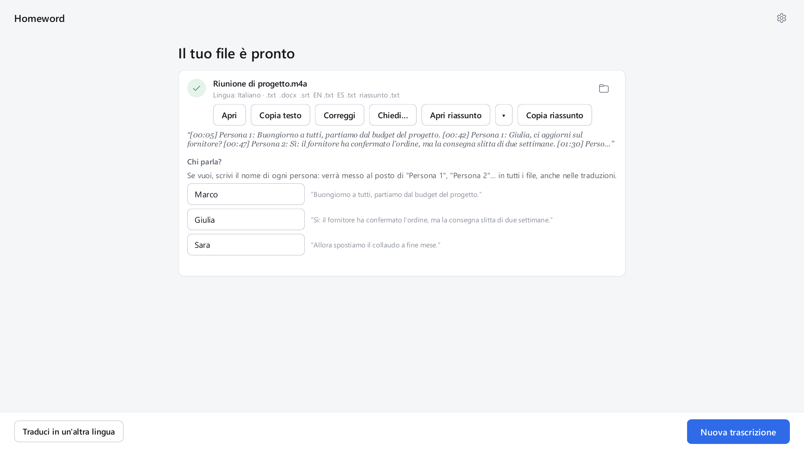
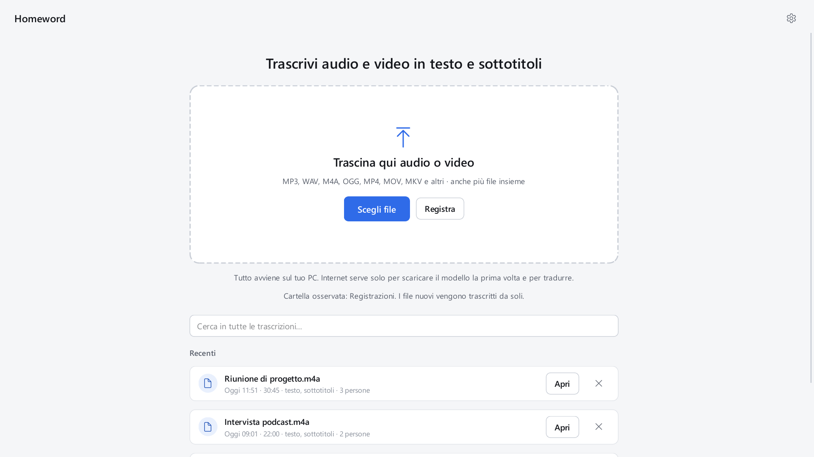
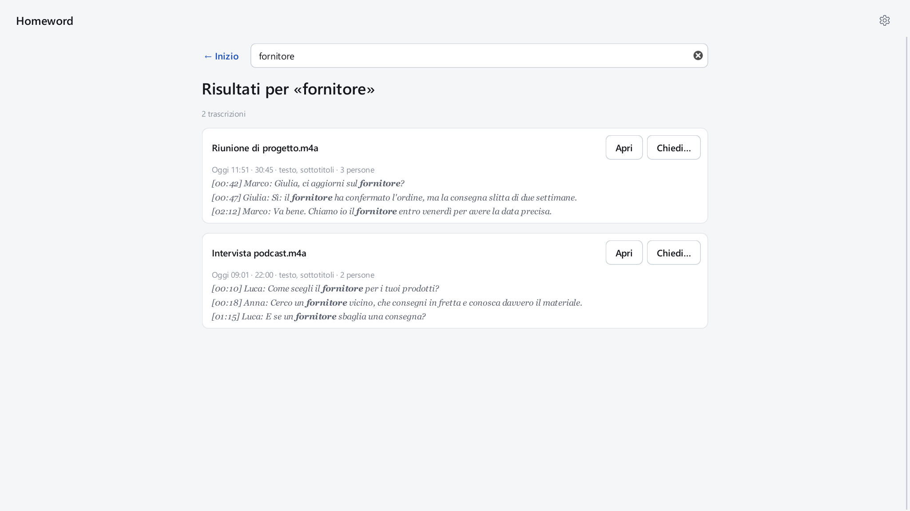
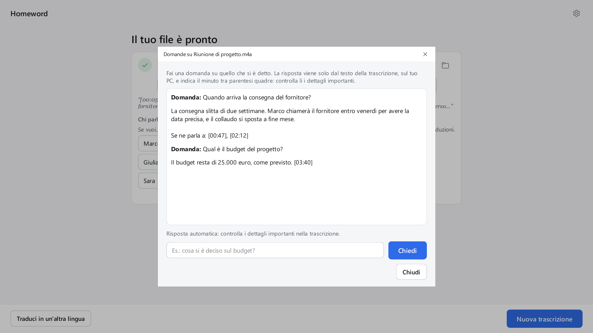
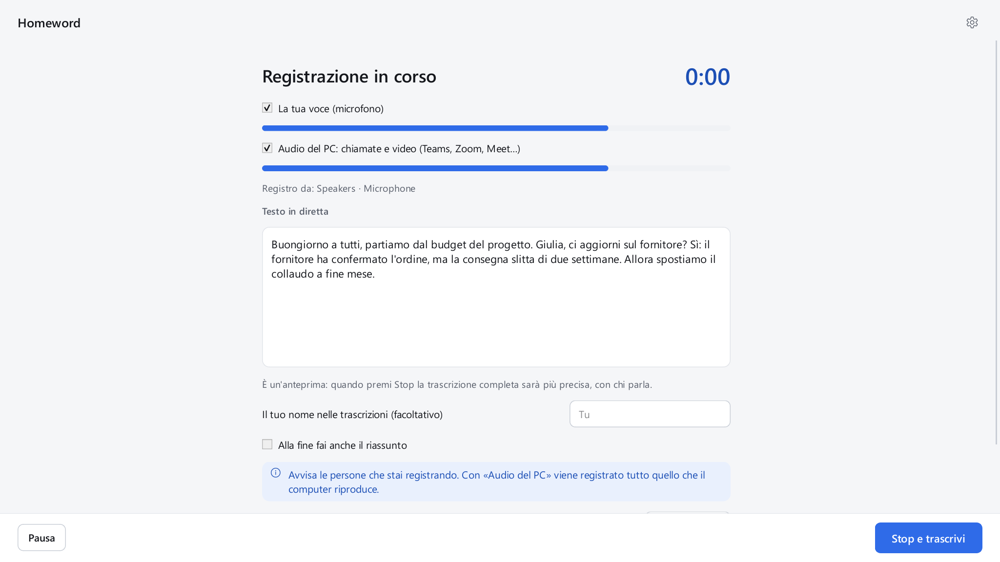

Le tue parole restano a casa.
Trasforma riunioni, interviste, lezioni e video in testo, sottotitoli e riassunti, direttamente sul tuo PC Windows. Sbobinare una registrazione non è mai stato così semplice. Niente viene caricato online, niente account, niente abbonamento.
Gratis · Windows 10 e 11 · Interfaccia in italiano e inglese

Tutto quello che serve per trasformare la voce in testo
Trascini una registrazione e ottieni il testo, i sottotitoli e, se vuoi, la traduzione e il riassunto. Riconosce anche chi sta parlando.
Trascrivere
File audio e video, anche più insieme o una cartella intera. Testo in paragrafi, Word, PDF o Markdown.
Registrare riunioni e chiamate
La tua voce e quello che suona il PC (Teams, Zoom, Meet), con il testo che compare in diretta.
Sottotitoli automatici
File .srt e .vtt pronti da usare, già divisi in righe leggibili e ben sincronizzate.
Chi parla
"Persona 1", "Persona 2"… poi scrivi i nomi veri e compaiono in tutti i file.
Tradurre
In 42 lingue, anche questo sul tuo PC. Anche dopo, dalla schermata dei risultati.
Verbali e riassunti
Decisioni e cose da fare per il verbale di una riunione, domande e risposte per un'intervista, idee chiave per una lezione. Oppure un'email di riepilogo pronta da inviare.
Correggere e riascoltare
Sistemi le parole, cambi chi parla, unisci o dividi le frasi. Salvando si aggiornano tutti i file.
Non perdi mai il lavoro
I lavori recenti sono nella schermata iniziale e le trascrizioni lunghe riprendono da dove si erano fermate.
Cerca ovunque
Trovi una parola o un nome in tutte le tue trascrizioni, con il minuto e chi l'ha detto.
Fai domande alle registrazioni
"Cosa si è deciso sul budget?" Una risposta breve con il minuto in cui se ne parla, scritta sul tuo PC.
Cartella osservata
Metti audio o video in una cartella che scegli tu e vengono trascritti da soli.
Tre passi
Niente impostazioni da imparare. Homeword sceglie il modello giusto per il tuo PC.
Trascina un file, o premi Registra
MP3, WAV, M4A, MP4, MKV, MOV e molti altri.
Scegli cosa ti serve
Sottotitoli, testo o entrambi, e le lingue in cui tradurre.
Ottieni i file
Aprili, copiali o mostrali nella cartella. I lavori recenti restano nella schermata iniziale.




Privata per scelta
Homeword non raccoglie dati personali. Niente account, niente pubblicità, niente statistiche, niente tracciamento.
Leggi l'informativa sulla privacy completa (in inglese).
- Trascrizione, riconoscimento di chi parla, traduzione, riassunti e risposte funzionano sul tuo computer.
- Registrazioni, trascrizioni e riassunti non vengono mai inviati a noi né a nessun altro.
- Internet serve solo per scaricare i modelli la prima volta.
- Google Traduttore è disponibile come opzione, spenta in partenza.
- Il microfono si usa solo mentre registri, dopo che hai premuto Registra.
Molto più veloce con una scheda grafica NVIDIA
Homeword trova da solo una scheda NVIDIA adatta e la usa: niente CUDA da installare, niente da configurare. Senza scheda funziona sul processore, solo più lentamente.
Un'ora di registrazione in circa 6 minuti
con il modello più preciso (Turbo) su una scheda NVIDIA da portatile di fascia base
Una riunione di 14 minuti, modello più preciso (Turbo) 6 volte più veloce
Stessa riunione, modello veloce (Small) 3,9 volte più veloce
Misurato a novembre 2026 su un portatile con processore Intel Core i7-10850H e scheda NVIDIA Quadro T1000 da 4 GB, una scheda di fascia base, su una riunione in inglese di 14 minuti con quattro persone. Le schede più recenti, come le GeForce RTX, di solito sono ancora più veloci. I tempi dipendono dal PC e dalla registrazione.
NVIDIA, GeForce, RTX e Quadro sono marchi di NVIDIA Corporation. Homeword non ha legami con NVIDIA e non è approvato da NVIDIA.
Requisiti
Funziona sulla maggior parte dei PC Windows. Una scheda grafica NVIDIA adatta lo rende molto più veloce, e Homeword la usa da solo.
| Minimo | Consigliato | |
|---|---|---|
| Sistema | Windows 10 (versione 1809) o 11, 64 bit | Windows 11 |
| Processore | 4 core | 6 core o più |
| Memoria | 4 GB: trascrizione e traduzione | 8 GB per riassunti e domande; 16 GB per i riassunti più precisi |
| Spazio su disco | circa 3 GB | circa 5 GB con i riassunti; fino a 15 GB con tutti i modelli più grandi |
| Scheda grafica | non serve | NVIDIA GTX serie 10 o più recente, 4 GB |
| Internet | solo la prima volta che usi ogni funzione, per scaricarne il modello | |
Su un PC sotto il minimo Homeword può essere molto lento o non funzionare. Puoi installarlo comunque, sotto la tua responsabilità.
Domande frequenti
È davvero gratis?
Sì. Niente account, niente abbonamento e niente pubblicità.
Funziona senza internet?
Sì, una volta scaricati i modelli. Ogni modello si scarica una volta sola, la prima volta che lo usi.
Store o installer: quale scelgo?
La versione del Microsoft Store si installa con un clic e la aggiorna lo Store. L'installer da GitHub si aggiorna da dentro l'app. È la stessa app.
Quanto sono affidabili i riassunti?
Li fa un piccolo modello di intelligenza artificiale sul tuo PC: bravo sui punti principali, ma può sbagliare un dettaglio. Controlla i dettagli importanti nella trascrizione.
Avevo MediaScribe. È la stessa app?
Sì. MediaScribe ora si chiama Homeword: stessa app, nome nuovo. MediaScribe si aggiorna da solo a Homeword e tiene impostazioni, lavori recenti e modelli scaricati.
Prova Homeword
Gratis per Windows. Le tue parole restano a casa.